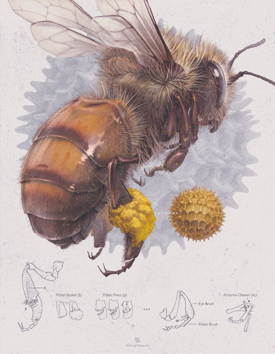

Bug Wiki
Home
Click on a diferent image to see a diferent description :)
- 
-

-

-

-

Bee's
Bees are insects with wings closely related to wasps and ants, known for their role in pollination and, in the case of the best-known bee species, the western honey bee, for producing honey. Bees are a monophyletic lineage within the superfamily Apoidea. They are presently considered a clade, called Anthophila. There are over 16,000 known species of bees in seven recognized biological families. Some species – including honey bees, bumblebees, and stingless bees – live socially in colonies while most species (>90%) – including mason bees, carpenter bees, leafcutter bees, and sweat bees – are solitary.
Bees are found on every continent except for Antarctica, in every habitat on the planet that contains insect-pollinated flowering plants. The most common bees in the Northern Hemisphere are the Halictidae, or sweat bees, but they are small and often mistaken for wasps or flies. Bees range in size from tiny stingless bee species, whose workers are less than 2 millimetres (0.08 in) long, to Megachile pluto, the largest species of leafcutter bee, whose females can attain a length of 39 millimetres (1.54 in).
Bug's
Bugs and insects aren't necessarily the same thing. The two words are used interchangeably, with insects appearing mostly in scientific contexts and bugs being used more casually, but the difference between the terms comes down to more than just semantics. They both describe groups in the animal kingdom recognized by science.
All bugs are insects, but under the technical definition, not all insects are bugs. True bugs belong to an order of insects called Hemiptera. There are a few characteristics that distinguish bugs from other insects: Most bugs have a straw-shaped mouth, or stylet, that they use to either sap juice from plants or blood from animals. They also tend to have long, segmented antennae and wings that are tough and dark where they meet the body and are thin and translucent at the ends. True bugs include stink bugs, bed bugs, water striders, and cicadas. Confusingly, some insects with bug in their name aren't actually true bugs, like ladybugs and June bugs (they're both beetles).
Butterflie's
Butterflies have the typical four-stage insect life cycle. Winged adults lay eggs on the food plant on which their larvae, known as caterpillars, will feed. The caterpillars grow, sometimes very rapidly, and when fully developed, pupate in a chrysalis. When metamorphosis is complete, the pupal skin splits, the adult insect climbs out, and after its wings have expanded and dried, it flies off. Some butterflies, especially in the tropics, have several generations in a year, while others have a single generation, and a few in cold locations may take several years to pass through their entire life cycle.
Butterflies are often polymorphic, and many species make use of camouflage, mimicry and aposematism to evade their predators. Some, like the monarch and the painted lady, migrate over long distances. Many butterflies are attacked by parasites or parasitoids, including wasps, protozoans, flies, and other invertebrates, or are preyed upon by other organisms. Some species are pests because in their larval stages they can damage domestic crops or trees; other species are agents of pollination of some plants. Larvae of a few butterflies eat harmful insects, and a few are predators of ants, while others live as mutualists in association with ants. Culturally, butterflies are a popular motif in the visual and literary arts.
Grasshopper's
Grasshoppers are a group of insects belonging to the suborder Caelifera. They are among what is probably the most ancient living group of chewing herbivorous insects, dating back to the early Triassic around 250 million years ago. Grasshoppers are typically ground-dwelling insects with powerful hind legs which allow them to escape from threats by leaping vigorously. As hemimetabolous insects, they do not undergo complete metamorphosis; they hatch from an egg into a nymph or "hopper" which undergoes five moults, becoming more similar to the adult insect at each developmental stage. At high population densities and under certain environmental conditions, some grasshopper species can change color and behavior and form swarms. Under these circumstances, they are known as locusts.
Grasshoppers are plant-eaters, with a few species at times becoming serious pests of cereals, vegetables and pasture, especially when they swarm in their millions as locusts and destroy crops over wide areas. They protect themselves from predators by camouflage; when detected, many species attempt to startle the predator with a brilliantly-coloured wing-flash while jumping and (if adult) launching themselves into the air, usually flying for only a short distance. Other species such as the rainbow grasshopper have warning coloration which deters predators. Grasshoppers are affected by parasites and various diseases, and many predatory creatures feed on both nymphs and adults.
Ant's
Ants are eusocial insects of the family Formicidae and, along with the related wasps and bees, belong to the order Hymenoptera. Ants appear in the fossil record across the globe in considerable diversity during the latest Early Cretaceous and early Late Cretaceous, suggesting an earlier origin. Ants evolved from vespoid wasp ancestors in the Cretaceous period, and diversified after the rise of flowering plants. More than 13,800 of an estimated total of 22,000 species have been classified. They are easily identified by their geniculate (elbowed) antennae and the distinctive node-like structure that forms their slender waists.
Ants form colonies that range in size from a few dozen predatory individuals living in small natural cavities to highly organised colonies that may occupy large territories and consist of millions of individuals. Larger colonies consist of various castes of sterile, wingless females, most of which are workers (ergates), as well as soldiers (dinergates) and other specialised groups. Nearly all ant colonies also have some fertile males called "drones" and one or more fertile females called "queens" (gynes). The colonies are described as superorganisms because the ants appear to operate as a unified entity, collectively working together to support the colony.